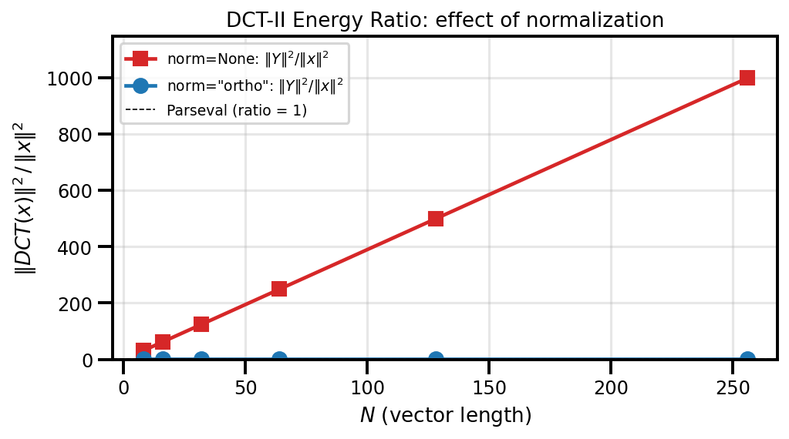

Spectral Transforms Guide¶
Practical guide for using DST/DCT/FFT transforms in SpectralDiffX.
Which Transform for Which BC?¶
The choice of spectral transform is dictated by the boundary conditions of your PDE. Each transform diagonalises the finite-difference Laplacian under a specific BC type:
| Boundary Condition | Transform | Why |
|---|---|---|
| Dirichlet (u = 0) | DST-I | Sine basis vanishes at both endpoints: sin(0) = sin(pi) = 0 |
| Neumann (du/dn = 0) | DCT-II | Cosine basis has zero derivative at both endpoints |
| Periodic (u wraps) | FFT | Complex exponentials are periodic by construction |
Rule of thumb
If your unknown is zero on the boundary, use DST. If its derivative is zero on the boundary, use DCT. If the domain wraps around, use FFT.
1-D vs N-D API¶
SpectralDiffX provides two API layers for transforms:
| Function | Input | Use case |
|---|---|---|
dct(x, type) / dst(x, type) |
1-D vector only | Single-axis transforms, signal processing |
dctn(x, type, axes) / dstn(x, type, axes) |
Any-dimensional | 2-D/3-D PDE solvers, separable transforms |
The 1-D functions (dct, dst, idct, idst) reject multi-dimensional
input with a ValueError. If you have a 2-D array and want to transform
along one axis, use the N-D functions with an explicit axes argument:
import jax.numpy as jnp
from spectraldiffx import dct, dctn
x = jnp.ones((32, 64))
# WRONG -- raises ValueError
# dct(x, type=2)
# RIGHT -- transform along axis 1 only
y = dctn(x, type=2, axes=[1])
# RIGHT -- transform along both axes (separable 2-D DCT)
y = dctn(x, type=2, axes=[0, 1])
# RIGHT -- transform all axes (same as above for 2-D input)
y = dctn(x, type=2) # axes=None defaults to all axes
Normalization: norm=None vs norm="ortho"¶
All transforms accept a norm parameter with two modes:
| Mode | Forward scaling | Inverse relationship | Use when |
|---|---|---|---|
norm=None |
Unnormalized | idct(dct(x)) == x (asymmetric) |
Solvers, internal eigenvalue work |
norm="ortho" |
Orthonormal matrix | dct(idct(x)) == x (symmetric) |
Energy preservation, Parseval |
When to use None (default)¶
Use unnormalized transforms when you are building spectral solvers. The
elliptic solver functions (solve_helmholtz_dst, etc.) use norm=None
internally because the eigenvalue formulas assume the standard unnormalized
convention.
When to use "ortho"¶
Use orthonormal transforms when you need:
- Parseval's theorem: energy in physical space equals energy in spectral space
- Self-inverse transforms: the forward and inverse use the same formula (up to rounding)
- Compatibility with orthonormal bases in variational methods
Code example: Parseval's theorem¶
import jax.numpy as jnp
from spectraldiffx import dct
x = jnp.array([1.0, 2.0, 3.0, 4.0, 5.0])
# With ortho normalization, energy is preserved
X_ortho = dct(x, type=2, norm="ortho")
energy_physical = jnp.sum(x**2)
energy_spectral = jnp.sum(X_ortho**2)
print(f"||x||^2 = {energy_physical:.4f}")
print(f"||X||^2 = {energy_spectral:.4f}")
# Both print the same value: 55.0000
# Without ortho, the energies differ by a factor of 2N
X_raw = dct(x, type=2, norm=None)
print(f"||X_raw||^2 = {jnp.sum(X_raw**2):.4f}") # != 55

Transform Types at a Glance¶
DCT (Discrete Cosine Transform)¶
| Type | Forward definition (unnormalized) | Inverse | Key property |
|---|---|---|---|
| I | Y[k] = x[0] + (-1)^k x[N-1] + 2 Sum x[n] cos(pink/(N-1)) | IDCT-I = DCT-I / (2(N-1)) | Self-inverse (up to scale) |
| II | Y[k] = 2 Sum x[n] cos(pik(2n+1)/(2N)) | IDCT-II = DCT-III / (2N) | "The DCT" -- most common |
| III | Y[k] = x[0] + 2 Sum x[n] cos(pin(2k+1)/(2N)) | IDCT-III = DCT-II / (2N) | Inverse of DCT-II |
| IV | Y[k] = 2 Sum x[n] cos(pi(2n+1)(2k+1)/(4N)) | IDCT-IV = DCT-IV / (2N) | Self-inverse (up to scale) |
DST (Discrete Sine Transform)¶
| Type | Forward definition (unnormalized) | Inverse | Key property |
|---|---|---|---|
| I | Y[k] = 2 Sum x[n] sin(pi(n+1)(k+1)/(N+1)) | IDST-I = DST-I / (2(N+1)) | Self-inverse (up to scale) |
| II | Y[k] = 2 Sum x[n] sin(pi(2n+1)(k+1)/(2N)) | IDST-II = DST-III / (2N) | Neumann-like at right edge |
| III | Y[k] = (-1)^k x[N-1] + 2 Sum x[n] sin(pi(n+1)(2k+1)/(2N)) | IDST-III = DST-II / (2N) | Inverse of DST-II |
| IV | Y[k] = 2 Sum x[n] sin(pi(2n+1)(2k+1)/(4N)) | IDST-IV = DST-IV / (2N) | Self-inverse (up to scale) |
Default types
dct and dctn default to type 2. dst and dstn default to type 1.
These are the most common choices for Neumann and Dirichlet problems respectively.
Quick Usage Examples¶
1-D DCT-II forward/inverse roundtrip¶
import jax.numpy as jnp
from spectraldiffx import dct, idct
x = jnp.array([1.0, 2.0, 3.0, 4.0])
# Forward DCT-II (default type)
X = dct(x, type=2)
# Inverse DCT-II recovers the original signal
x_recovered = idct(X, type=2)
print(jnp.allclose(x, x_recovered)) # True
# Also works with ortho normalization
X_ortho = dct(x, type=2, norm="ortho")
x_recovered_ortho = idct(X_ortho, type=2, norm="ortho")
print(jnp.allclose(x, x_recovered_ortho)) # True
2-D DST-I for a Dirichlet problem setup¶
import jax.numpy as jnp
from spectraldiffx import dstn, idstn
# Interior grid points for a Dirichlet problem (boundary = 0 implicitly)
Ny, Nx = 32, 64
rhs = jnp.ones((Ny, Nx))
# Forward 2-D DST-I along both axes
rhs_hat = dstn(rhs, type=1, axes=[0, 1])
# Inverse 2-D DST-I recovers the original
rhs_recovered = idstn(rhs_hat, type=1, axes=[0, 1])
print(jnp.allclose(rhs, rhs_recovered, atol=1e-6)) # True
Ortho normalization: energy preservation¶
import jax.numpy as jnp
from spectraldiffx import dct
x = jnp.linspace(0.0, 1.0, 128)
X = dct(x, type=2, norm="ortho")
physical_energy = jnp.sum(x**2)
spectral_energy = jnp.sum(X**2)
print(f"Physical: {physical_energy:.6f}")
print(f"Spectral: {spectral_energy:.6f}")
# These are equal (Parseval's theorem)
Common Pitfalls¶
DCT-I requires N >= 2
DCT type I is defined for sequences of length N >= 2. The even-extension
trick uses x[1:-1], which requires at least two elements.
dct/dst are 1-D only
Passing a 2-D array to dct() or dst() raises a ValueError. Use
dctn() / dstn() with the axes parameter for multi-dimensional input.
Type 3 ortho pre-scaling is handled internally
DCT-III and DST-III require asymmetric input scaling in ortho mode.
SpectralDiffX handles this automatically -- do not manually pre-scale
your input. Just pass norm="ortho" and the library does the rest.
Match norm modes between forward and inverse
The norm argument must be the same for the forward and inverse
transforms. Mixing norm=None forward with norm="ortho" inverse
(or vice versa) will give wrong results.
Decision Guide¶
Use this flowchart to pick the right transform for your problem:
What are your boundary conditions?
|
+-- u = 0 at boundaries (Dirichlet)
| |
| +-- 1-D vector? --> dst(x, type=1)
| +-- N-D array? --> dstn(x, type=1, axes=[...])
|
+-- du/dn = 0 at boundaries (Neumann)
| |
| +-- 1-D vector? --> dct(x, type=2)
| +-- N-D array? --> dctn(x, type=2, axes=[...])
|
+-- Periodic (domain wraps around)
| |
| +-- Use jnp.fft.fft / jnp.fft.fft2
| (SpectralDiffX FFT solvers use JAX FFT directly)
|
+-- Mixed BCs (e.g., Dirichlet in x, Neumann in y)
|
+-- Apply different transforms per axis:
dstn(x, type=1, axes=[1]) # Dirichlet in x
dctn(x, type=2, axes=[0]) # Neumann in y